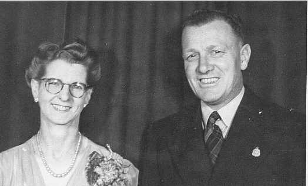
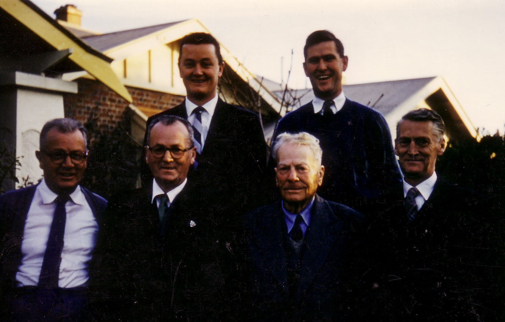

|
5.
THE MIDDLE YEARS AND NEW FREEDOMS: 1945
—1958 Work
was plentiful, and Norman went to work first at Post Office, where his
skill with sending and receiving Morse code was still relevant, and
then to Adelaide Joinery Works, where he spent the rest of his working
life as company secretary. What
I remember about the next ten years are the dances, the family parties
and sport. The Institute Library opposite the Clarence Park Railway
Station provided a community focus for us. There were casual strolls
of a Friday evening to the Institute Library where I devoured my
weekly supply of books before the end of the weekend and had to wait
until the next visit. I recall the golden light of the street lights;
the sense that every evening was a warm, balmy Spring; and that there
was as much time as we wanted to choose books from the treasure trove
of the Library. Norman played electric light cricket in the nets
adjacent to the Institute and I longed to be big enough to play too. I
can still hear the long dying notes of the Last Post at the Anzac Day
memorial services in the Institute Hall, the bugle played by my
father, and his voice as I heard for the first time the now-familiar
words They
shall grow not old, as we that are left grow old. Age
shall not weary them, nor the years condemn. At
the going down of the sun, and in the morning We
will remember them. These
were the days of Guy Fawkes Night, a huge bonfire at the end of our
block every November 5th. In the days before greater
prudence demanded the restriction of fireworks, we squirreled away
savings to buy sky rockets, Catherine wheels, Mount Vesuvius's,
Roman Candles, and penny and three—penny bangers. The weeks before Guy
Fawkes would be spent planning our own pyrotechnical display, always
saving the more expensive and dramatic sky rockets until last. It
seemed that, during the decade after the war, wherever I turned there
was my father. He was MC at all the dances, leading off the dances
with my mother and the toast—master at weddings. When square dancing
became the craze in the 1950, he and Olive took it up with gusto, and
he tried his hand at calling the dances. He was at every baseball
game. He learned the art of scoring, becoming the official scorer when
summer night baseball began in Adelaide, and was scorer for the
interstate baseball series. At 50, he was still playing parklands
cricket — a competent wicketkeeper and middle-order batsman. My
parents dug up the whole back yard at Byron Rd and planted huge beds
of flowers and Olive started a florist's business from home. Then,
when Olive went to work at central Florists in the Adelaide Central
market, they flattened the whole area out again and turned it into a
tennis court. When the interstate baseball series was held in Adelaide
in 1950, we entertained all the teams at a barbecue at our house. It
was not uncommon for there to be similar parties of families and
friends — barbecues, a keg of beer (and a careful eye on any young
ones who tried to sample it!), plenty of soft drinks, and plates and
plates of cakes and sausage rolls prepared by 'the baseball
wives'.  My
father inculcated into me the importance of fair play, of accepting
the umpire's decision, and of always giving your best. I recall an
incident where I had made a play in a baseball game that was within a
strict interpretation of the rules, but of doubtful sportsmanship. In
a conversation after the game, the umpire suggested to my father that
I had cheated. I don't remember the words my father used in relaying
this conversation to me, but he was obviously torn between the need to
defend his own family against the umpire's challenge, and his sense
that I had indeed transgressed some unwritten code of decency. In
1951, the day after we had celebrated his 21st birthday,
Bob went overseas. I know Norman wasn't all that keen on Bob's
trip. My brother had fallen under the spell of a 'fast-talking
Yank'[1]
(I think these were my father's sentiments!), and had been persuaded
to try his hand at baseball in the USA. Bob had also fallen in love
with a dazzling Californian blonde, so my father's advice had little
influence against the irresistible twin forces of sport and sex. (For
the Canadians — the rest is history!!). By
1950, we had moved from our Byron Rd house to Belair Rd — another
newly-built house. During our time at Byron Rd, Norman's father had
come to live with us, and Gramp had his own small room added to the
garage. Gramp then became a permanent fixture in our family, along
with my mother's Aunt Chrissie[2],
for the rest of my time at home. My
father's summing up of people was usually accurate. The
'fast-talking Yank' did turn out to be a con—man and later fell
foul of the law. I also recall him trying to gently warn me away from
association with a couple of men. His warning was too oblique for the
adolescent me to grasp but I later realised that the men in question
were gay, and he was trying to protect me from inappropriate
encounters! In
1953, Norman and Olive celebrated their 25th wedding
anniversary, with friends and family. In the photo, they are both
showing extra weight, Olive at last losing the gaunt figure of the war
years. In my father's hand is the ever—present cigarette. He smoked
for as long as I can remember, a significant contributor to my early
asthma and to the heart disease that caused his own death. In
1955, Bob returned to Australia with Trish and the infant Burk. My
parents did all they could to welcome them home, but work was not easy
to get for Bob, Trish longed for home, and in 1956, we farewelled them
again. As Bob, Trish and Burk were sailing off to Canada, another
significant meeting was occurring. At a church camp, Charmian and I
met. It is clear that my father had good judgement as, in his quiet
and unobtrusive way, he spoke approvingly of Charmian from the early
days, and less warmly of other girls I took out during the three years
of Charmian and my on—again, off—again courtship. My grandfather was
much more direct in his assessment of Charmian who definitely had his
'seal of approval' from early on! Charmian and I married in 1959,
just after I had graduated, and a month before my parents left for
Canada. Their generosity to us and our children over the next twelve
years was wonderful. They gave us significant material assistance, but
more importantly they gave us time and affection. In retrospect, we
see how much their gifts of extended child minding that allowed us
'time out' together contributed to the strength of our marriage. The
following photo is the only one I have that includes Norman's
father, Steve, and his brothers Roy and Ralph. Roy's son, Jeff and
Ralph's son, Warren, are in the back row. It is taken at our
Westbourne Park house a couple of years after Bob and Trish had
returned to Canada, which explains Bob's absence. My absence can be
directly attributed to the matters referred to in the preceding
paragraph!  Richmond
Rd, Westbourne Park, 1957 Next: Norman Quintrell 1959-74 |